Adding Context and Ribbon Menus¶
xlSlim allows you to easily create right-click context menus and ribbon bar menus. The functionality has been designed to be as simple as possible, no knowledge of Custom UI XML is required!
We will show how to add a plotting menu to simplify adding line and column plots of selected data.
We will add this right-click context menu:
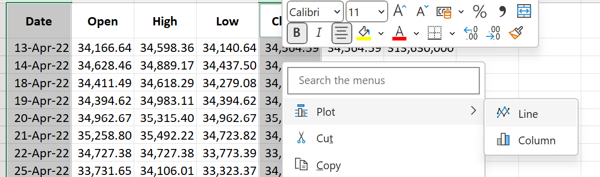{kind=link}
And this ribbon bar menu:
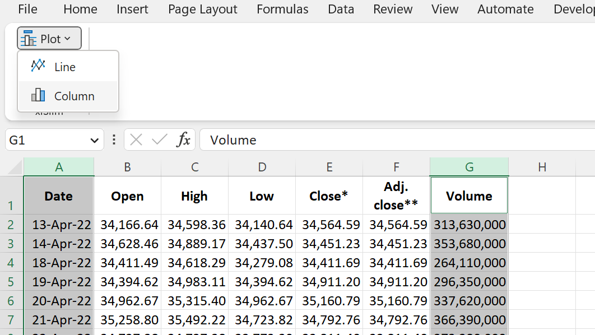{kind=link}
Clicking on the menu items will generate plots of the selected data:
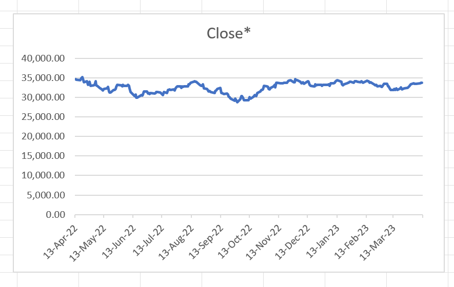 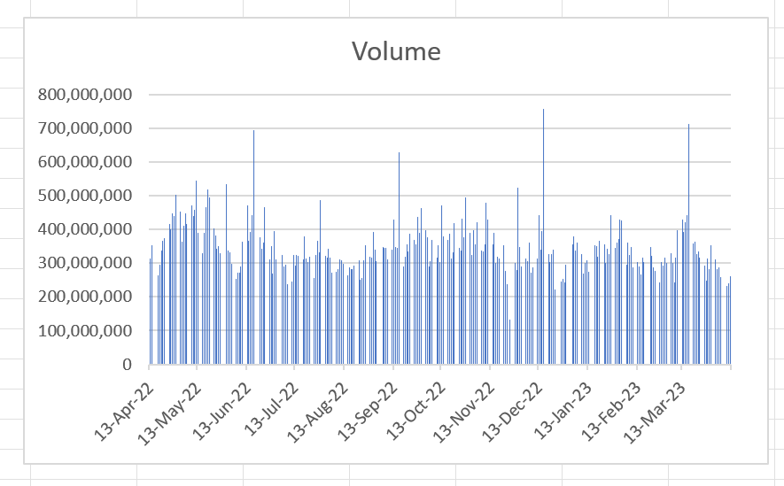{kind=link}
{kind=link}
Warning
This example requires a premium licence as a Python environment with the pywin32 extensions installed is required. Anaconda distributions include pywin32. See Licensing
However the menu functionality itself does not require a premium license, so Python functions executing within the bundled Python environment do not need premium license.
We will use these two Python functions to create the plots from the selected data:
import pythoncom
import win32com.client as win32
XLSLIM_COMAPPFUNC = None
def AddLinePlot():
excel_obj = XLSLIM_COMAPPFUNC()
app = excel_obj.Application
selection = app.Selection
active_sheet = app.ActiveSheet
# xlLine = 4
chart = active_sheet.Shapes.AddChart2(-1, 4)
chart.Chart.SetSourceData(Source=selection)
def AddClusteredColumnPlot():
excel_obj = XLSLIM_COMAPPFUNC()
app = excel_obj.Application
selection = app.Selection
active_sheet = app.ActiveSheet
# xlColumnClustered = 51
chart = active_sheet.Shapes.AddChart2(-1, 51)
chart.Chart.SetSourceData(Source=selection)
We start by opening a new Excel workbook and pasting the Python code into cell A1:
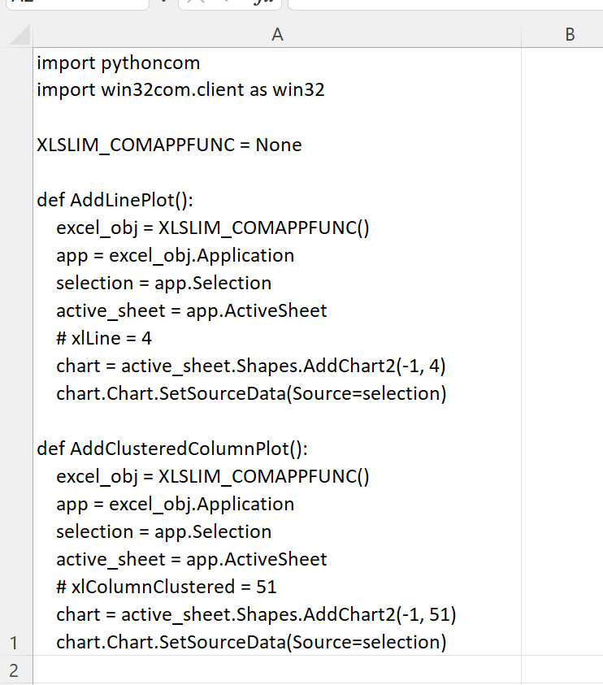{kind=link}
Then we use CreatePyModule() to create a dynamic Python module and register the two functions:
=CreatePyModule(A1)
{kind=link}
Context Menus¶
We use the UpdateContextMenu() to add the functions AddLinePlot() and AddClusteredColumnPlot() to the right-click context menu.
We start by adding just AddLinePlot() to a menu called Plotting with one menu item Line.
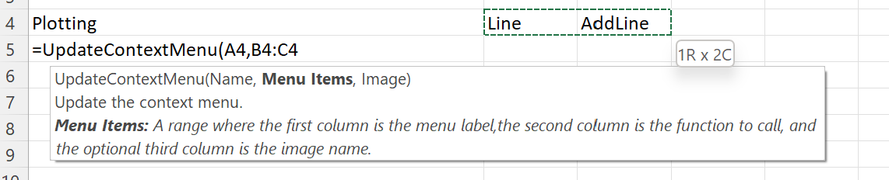{kind=link}
The menu is updated as expected:
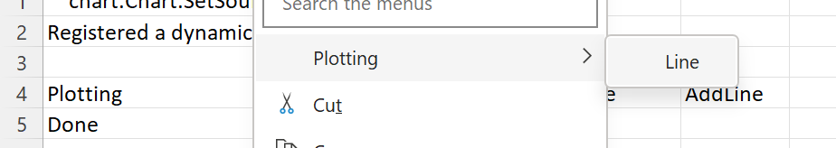{kind=link}
Selecting data and clicking on the PlottingLine menu item generates plots as expected:
Adding further menu items is done by extending the range passed into UpdateContextMenu():
{kind=link}
At this stage our context menu looks like this:
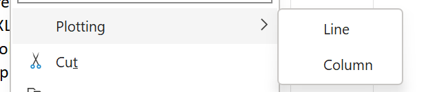{kind=link}
We’d like to add some images to make the menu look more professional. The image for the top level menu is an optional third argument to UpdateContextMenu() and the images for the menu items are an optional third column in the range passed as the second argument.
The available images are restricted to those built into Excel. Fortunately there are many builtin images to choose from. Available images can be browsed at images. These look like good images for the menu items:
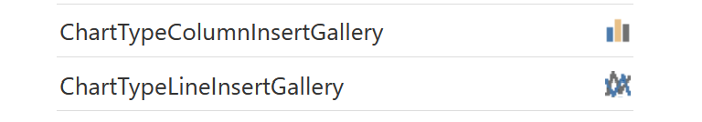{kind=link}
And this looks like a good candidate for the top menu:
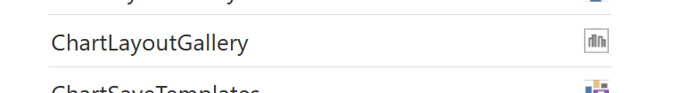{kind=link}
We can amend the UpdateContextMenu() call to include these image names:
{kind=link}
Now the menu has nice images:
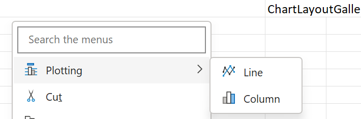{kind=link}
Ribbon Menus¶
Ribbon menus work exactly the same as context menus. The inputs to UpdateRibbonMenu() are identical to UpdateContextMenu().
{kind=link}
The same menu is now available on the Excel ribbon:
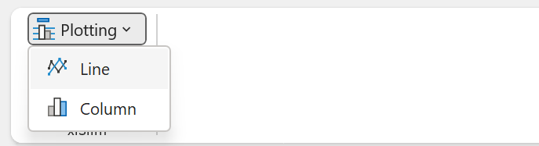{kind=link}
Note
All the Python code and Excel files shown are available from github in the xlslim-code-samples repo. I highly recommend downloading the samples from github. The Excel workbooks contain many tips and tricks.